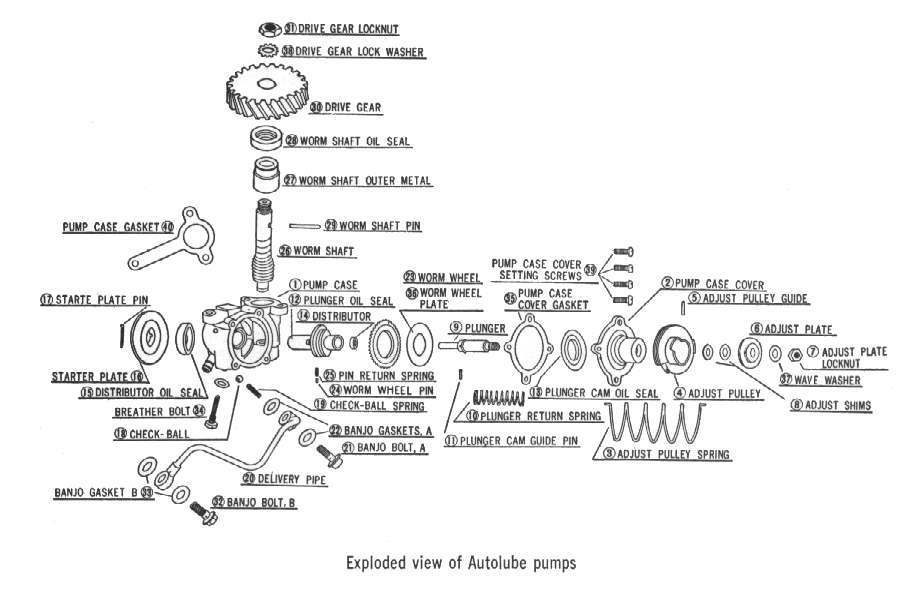

On two-strokes with oil injection, a small pump on the engine draws oil from a separate oil tank and feeds it into the inlet or the crankcase. A cable from the throttle turns a lever on the pump. Bikes without this pump need oil mixed into the fuel (premix).
What it does
A two-stroke has no oil sump; it burns a small amount of oil with every charge to lubricate the crank, rod and piston. The pump gives more oil when the throttle is open and less at idle. If the pump stops, the cable comes off, or air gets into the lines, the engine runs dry and can seize in a few kilometres.
Signs it is worn or failing
- Two-stroke oil tank level is not going down: stop riding.
- Too much oil: Blue smoke, oil dripping from the exhaust, a blocked exhaust and oily plugs.
- Too little: Engine seized or a white plug.
- Pumps from the Yamaha and Mikuni families are common. The delivery rises with the throttle through a cable, which must be set to the marks in the manual. See Set the oil pump cable so it follows the throttle.
- Parts for old pumps may be old stock only, and some parts are sold only with the whole pump.
When to replace it
When it does not deliver oil after bleeding, the shaft seal leaks, or the drive is damaged. Replace cracked oil lines and the line clips at the same time.
What to match when buying
- Match make, model and engine. Pump output differs between engines.
- Use the two-stroke oil grade your bike's manual states; never use four-stroke oil in a two-stroke tank.
- Match oil line inside diameter, and fit the non-return valve the right way.
Fitting notes
- Workshop job: Check the two-stroke oil pump and lines.
- After any work, bleed air from the pump and lines and confirm oil reaches the engine before riding.
- Set the pump cable so its marks line up as the manual shows.